Advanced Machine Learning
16: K-means
Outline for the lecture
- MLE for Gaussians
- GMM: Gaussian Mixture Model
- Clustering
- Hard K-means
- Soft K-means
MLE for Gaussians
Remember continuous features?
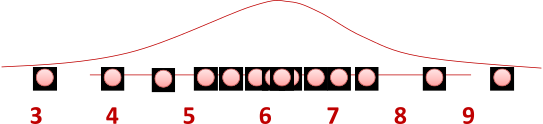Model Likelihoods as Gaussians...\begin{align} \prob{p}{x|\mu,\sigma} &= \frac{1}{\sqrt{2\pi\sigma^2}} e^{-\frac{(x-\mu)^2}{2\sigma^2}} = {\cal N}_x(\mu, \sigma) \end{align}
MLE for Gaussian $\mu$ and $\sigma^2$
$\theta = (\mu, \sigma^2)$ that maximizes the probability of observed data \begin{align} \hat{\theta}_{MLE} & = \underset{\theta}{\argmax} \prob{P}{D|\theta}\\ & = \underset{\theta}{\argmax} \displaystyle{\prod_{i=1}^n}\prob{P}{x_i|\theta} \color{#dc322f}{\text{ independent draws}}\\ & = \underset{\theta}{\argmax} \displaystyle{\prod_{i=1}^n} \frac{1}{\sqrt{2\pi\sigma^2}} e^{-\frac{(x_i-\mu)^2}{2\sigma^2}} \color{#dc322f}{\text{ i.i.d}}\\ & = \underset{\theta}{\argmax} \frac{1}{\sqrt{2\pi\sigma^2}} e^{-\frac{\sum_{i=1}^n(x_i-\mu)^2}{2\sigma^2}}\\ \end{align}MLE for Gaussian $\mu$ and $\sigma^2$
\begin{align} \hat{\mu}_{MLE} &= \frac{1}{n} \displaystyle\sum_{i=1}^n x_i\\ \hat{\sigma}^2_{MLE} &= \frac{1}{n} \displaystyle\sum_{i=1}^n (x_i - \hat{\mu}_{MLE})^2\\ \end{align}
MLE for $\sigma^2$ of a Gaussian is biased: expected result of estimation is not the true parameter! $$\hat{\sigma}^2_{unbiased} = \frac{1}{n-1} \displaystyle\sum_{i=1}^n (x_i - \hat{\mu}_{MLE})^2$$
What if there are multiple Gaussians?
GMM: Gaussian Mixture Model
Density estimation
\begin{align} \prob{p}{\vec{x}_1, \dots, \vec{x}_n|\vec{\theta}} & = \prod_{i=1}^n \prob{p}{\vec{x}_i|\vec{\theta}} \end{align}
- There is a latent parameter $\vec{\theta}$
- $\forall i \in \{1, 2, \dots, n\}$ draw observed $\vec{x}_i$ from the parametric distribution given $\vec{\theta}$
-
But what if a Gaussian does not fit the data? -
Answer: Mixture modeling or Partitioning algorithms
- Different parameters for different regions of the domain $[\vec{\theta}_1, \dots \vec{\theta}_K]$
Mixture modeling
Key: Soft Assignment
- Probability that a sample $\vec{x}_i$ belongs to $k^{\mbox{th}}$ cluster $=\pi_k$
- $K$ clusters
- $K$ probabilities $(\pi_1, \dots, \pi_K)$
- As probabilities they are $\pi_i \ge 0, \sum_{k=1}^K\pi_k=1$
- \begin{align} \prob{p}{\vec{x}} & = \sum_{k=1}^K \prob{p}{\vec{x}|y=k}\prob{P}{y=k} \end{align}
Gaussian Mixture Model
Mixture of $K$ Gaussain distributions: (Multi-modal distribution)
- $K$ "components" (modes)
- Component $k$ has an associated $\vec{\mu}_k$
- Component $k$ generates data from $\prob{N}{\vec{\mu}_k, \bm{\Sigma}_k}$
- Each sample is generated as
- Choose component $k$ with probability $\pi_k = \prob{P}{y=k}$
- Sample $\vec{x} \sim \prob{N}{\vec{\mu}_k, \bm{\Sigma}_k}$
Gaussian Mixture Model
Mixture of $K$ Gaussain distributions: (Multi-modal distribution)\begin{align} \prob{p}{\vec{x}|y=k} & = \prob{N}{\vec{\mu}_k, \bm{\Sigma}_k}\\ \prob{p}{\vec{x}} & = \sum_{k=1}^K \prob{p}{\vec{x}|y=k}\prob{P}{y=k} \end{align}
Gaussian Mixture Model: Clustering
Assuming
\begin{align} \mbox{ for simplicity }\bm{\Sigma}_k & = \sigma^2 \bm{I}\\ \prob{p}{\vec{x}|y=k} & = \prob{N}{\vec{\mu}_k, \sigma^2 \bm{I}}\\ \prob{p}{y=k} & = \pi_k\\ \mbox{All parameters } & \vec{\mu}_1, \dots \vec{\mu}_K, \\ &\sigma^2, \\ & \pi_1, \dots, \pi_K \\ \mbox{ are known} \end{align}
Given $\vec{x}$, does it belong to cluster $k$ or $z$?
Decide based on posterior ratio
\begin{align} \log\frac{\prob{P}{y=k|\vec{x}}}{\prob{P}{y=z|\vec{x}}} = &\\ \log\frac{\prob{p}{\vec{x}|y=k}\prob{P}{y=k}/\prob{p}{\vec{x}}}{\prob{p}{\vec{x}|y= z}\prob{P}{y=z}/\prob{p}{\vec{x}}} = &\\ \log\frac{\prob{p}{\vec{x}|y=k}\pi_k}{\prob{p}{\vec{x}|y= z}\pi_z} = &\\ \log\frac{\pi_k\exp{\left(\frac{-1}{2\sigma^2}\|\vec{x} - \vec{\mu}_k\|^2\right)}}{\pi_z\exp{\left(\frac{-1}{2\sigma^2}\|\vec{x} - \vec{\mu}_z\|^2\right)}} &\\ \end{align}
Piecewise linear decision boundary
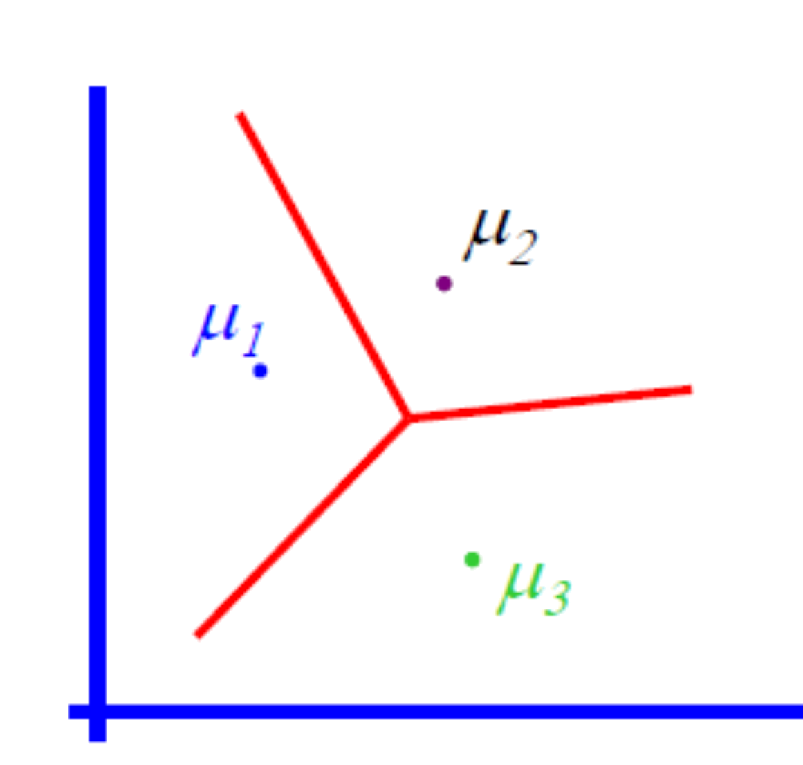Clustering
What is clustering?
- Similar to mixture models: which component does $\vec{x}$ belong to?
- The process of grouping objects into classes by similarity
- High intra-class similarity
- Low inter-class similarity
- Clustering: the most common form of unsupervised learning
- When talked about but still people use: PCA, ICA, NMF, KDE etc. may be even more often.
Clustering is subjective
Clustering is subjective
| 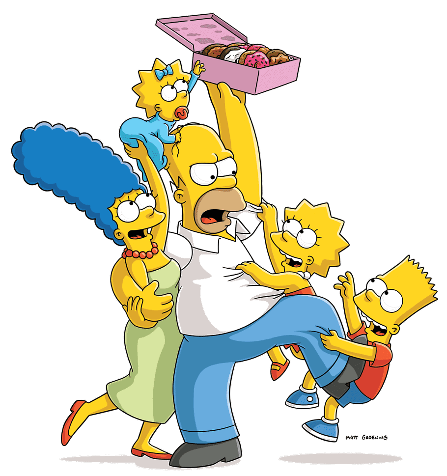 | 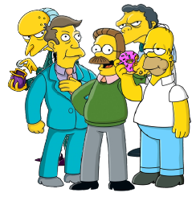 | ||
| Simpson's family | School employees | Females | Males |
What is similarity?
Hard to define! ... but we know when we see it
Hard K-means clustering
The Problem
Given a set of observations $\left( \vec{x}_1, \dots, \vec{x}_n\right)$, where $\vec{x}_i \in \RR^d$
Partition $n$ observations into $K$ sets $(K\le n)$ $\bm{S} = \{S_1, S_2,\dots, S_K\}$ such that the sets minimize the within-cluster Euclidean squared distances: \begin{align} \underset{\bm{S}}{\argmin} \sum_{k=1}^{K}\sum_{\vec{x}_i\in S_k} \|\vec{x}_i - \vec{\mu}_k\|^2 \end{align} where $\vec{\mu}_k$ is the mean point in set $S_k$ (centroid).
The Problem
NP-hard problem in general
Heuristic solutions: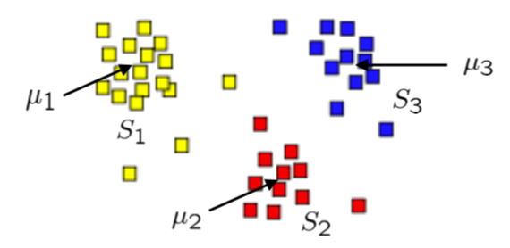
- K-means algorithm
- GMM
K-means step by step: 1
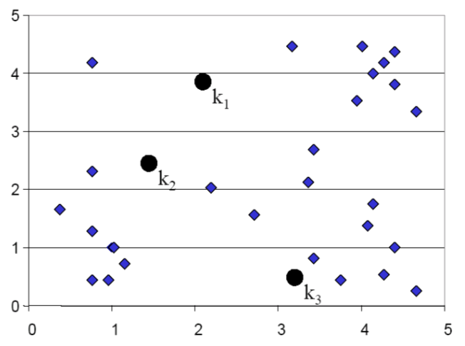Guess the clusters
K-means step by step: 2
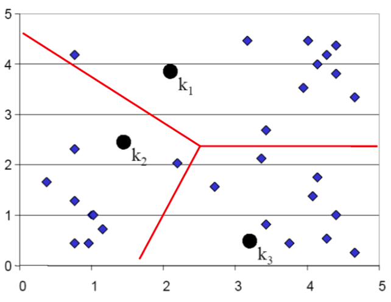Assign points to the nearest cluster centers (means)
K-means step by step: 3
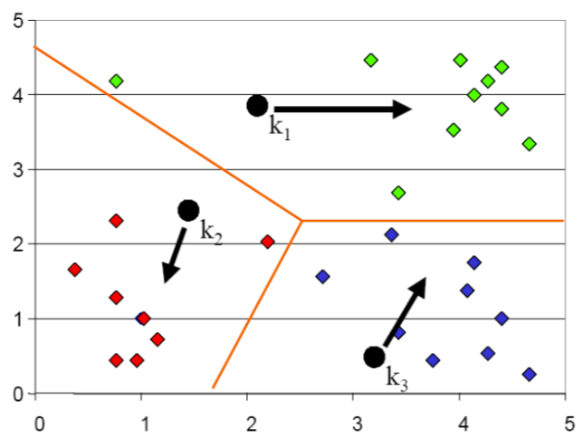Re-estimate the cluster means using assignment of last step
K-means step by step: 4
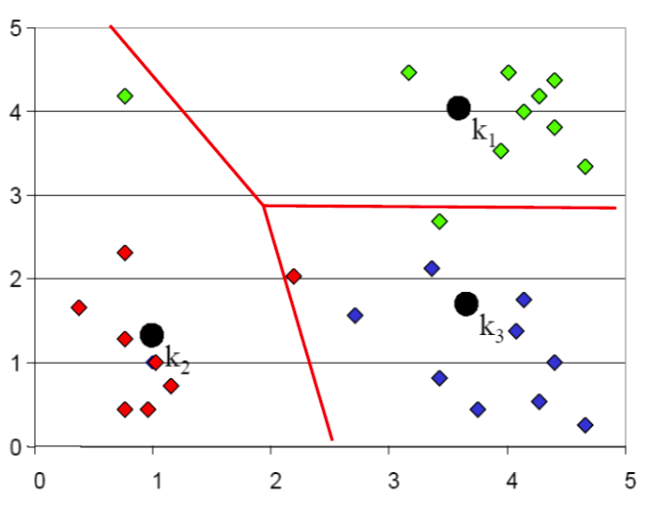Assign points to the nearest cluster centers (means)
K-means step by step: 5
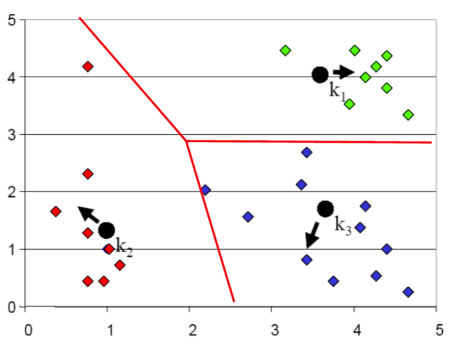Re-estimate the cluster means using assignment of last step
K-means step by step: 6
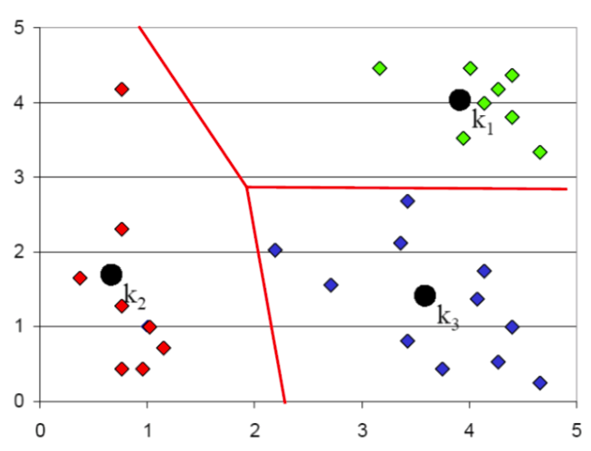Stop when no reassignments are needed
Another example
K-means clustering algorithm
- Input
- Data + Desired number of clusters $k$ + distance metric $\prob{d}{\cdot, \cdot}$ \[ \prob{d}{\vec{x}, \vec{y}} = \frac{1}{2}\sum_i(x_i - y_i)^2 \]
- Initialization
- Pick $K$ cluster centers (randomly)
- Iterations
-
- Decide the class memberships of the $n$ objects by assigning them to the nearest cluster centers
- Re-estimate the $K$ cluster centers (aka the centroid or mean), by assuming the memberships found above are correct.
- Termination
- Exit if none of $n$ objects changed membership in the last iteration (otherwise repeat)
k-means: Iterations
Assignment
- Decide the class memberships of the $n$ objects by assigning them to the nearest cluster centers
\[
\hat{k}_n = \underset{k}{\argmin} \prob{d}{\hat{\mu}_k, \vec{x}_n}
\]
or, equivalently, use "responsibilities" $r_k^n$ indicators, or length $K$ binary vectors for each data sample
\[
r_k^n = \begin{cases}
1 & \text{if } \hat{k}_n = k\\
0 & \text{if } \hat{k}_n \ne k
\end{cases}
\]
Break a tie by assigning to the smallest matching $k$
k-means: Iterations
Update
- Re-estimate the $K$ cluster centers (aka the centroid or mean), by assuming the memberships found above are correct. \begin{align} \hat{\mu}_k &= \frac{\underset{n}{\sum}r_k^n \vec{x}_n}{R_k}\\ R_k &= \underset{n}{\sum} r_k^n \end{align}
Iterations: once more
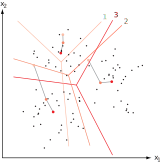K-means clustering algorithm
computational complexity
- Computing distance between each of $n$ objects and $K$ clusters ${\cal O}(Kn)$
- Computing cluster centers ${\cal O}(n)$ (each object is added once to some cluster)
- For $l$ iterations total complexity is ${\cal O}(lKn)$
- Is it guaranteed to terminate?
Seed choice: 1
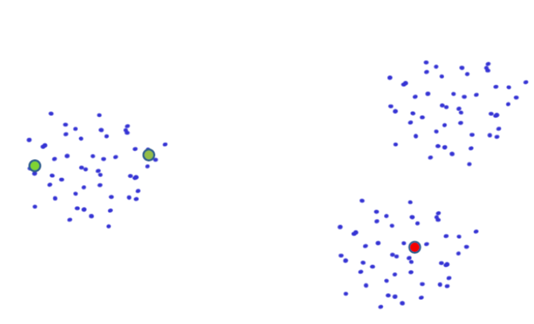Seed choice: 2
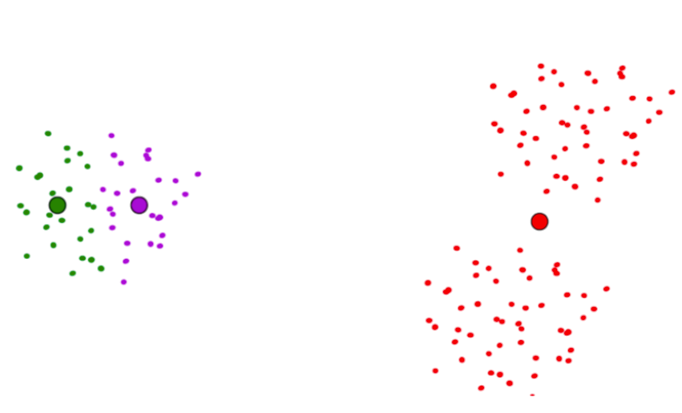Seeds
Objective to optimize
\begin{align} \underset{\bm{S}}{\argmin} \sum_{k=1}^{K}\sum_{\vec{x}_i\in S_k} \|\vec{x}_i - \vec{\mu}_k\|^2 \end{align} where $\vec{\mu}_k$ is the mean point in set $S_k$ (centroid).
\begin{align}
\sum_{k=1}^{K}\sum_{\vec{x}_i\in S_k} \|\vec{x}_i - \vec{\mu}_k\|^2
\end{align}
How to choose number of clusters?
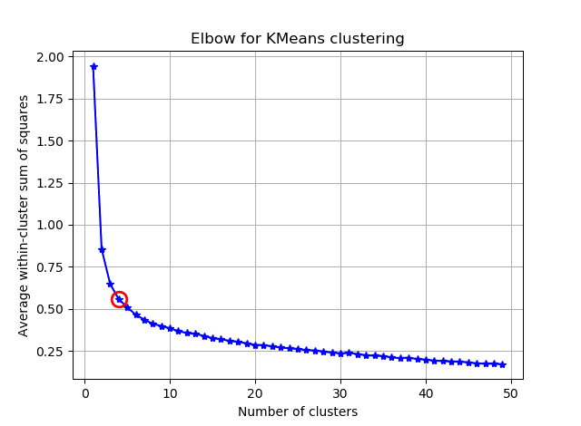Failure mode 1
Failure mode 2
A problem
borderline points contribute fully
Soft K-means clustering
Relax responsibilities
- Instead of hard "responsibilities" $r_k^n$
- Make "responsibilities" continuous $r_k^n$
- sum to one to make sure a point is assigned to at least one cluster.
- We'll need a parameter $\beta$ - stiffness
soft k-means: Iterations
Assignment
- For each point
compute a soft-assignment to each cluster
or, equivalently, compute "responsibilities"
for each data sample
\[
r_k^n = \frac{e^{-\beta \prob{d}{\hat{\vec{\mu}}_k, \vec{x}_n}}}{\sum_{k'}e^{-\beta \prob{d}{\hat{\vec{\mu}}_{k'}, \vec{x}_n}}}
\]
Note $\sum_k r_k^n = 1 \forall n$
soft k-means: Iterations
Update
- Re-estimate the $K$ cluster centers (aka the centroid or mean), by assuming the memberships found above are correct. \begin{align} \hat{\mu}_k &= \frac{\underset{n}{\sum}r_k^n \vec{x}_n}{R_k}\\ R_k &= \underset{n}{\sum} r_k^n \end{align}
soft Iterations
Note, lengthscale $\sigma \def 1/\sqrt{\beta}$


{kind=link}